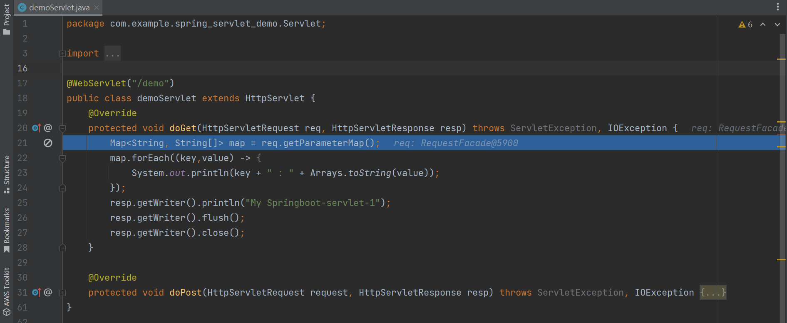
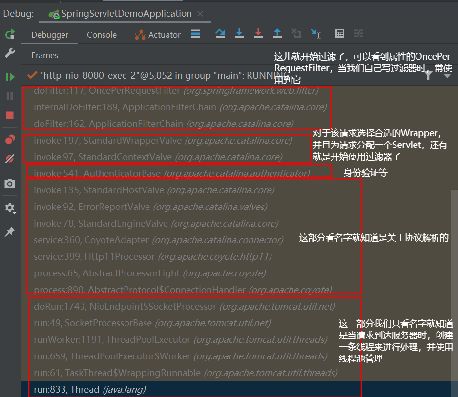
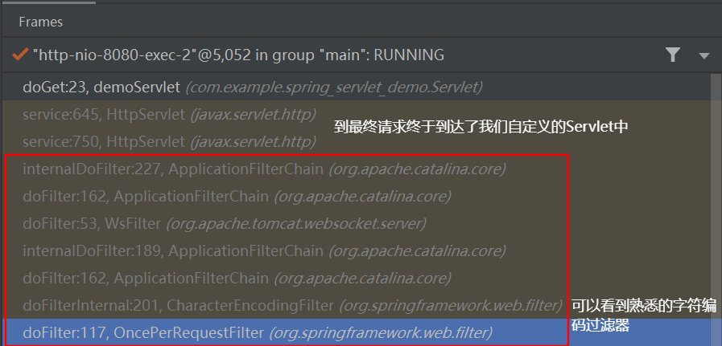
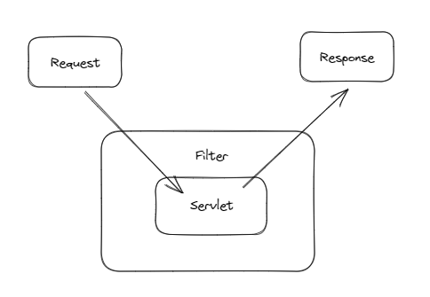

从Servlet到SpringMVC
从Servlet 到 SpringMVC
我们从最简单的Servlet项目来查看一个请求是如何被处理的： 本案例中使用SpringBoot + Servlet + Tomcat进行演示
<dependencies>
<!-- 添加servlet依赖模块 -->
<dependency>
<groupId>javax.servlet</groupId>
<artifactId>javax.servlet-api</artifactId>
</dependency>
<!--添加tomcat依赖模块.-->
<dependency>
<groupId>org.springframework.boot</groupId>
<artifactId>spring-boot-starter-tomcat</artifactId>
</dependency>
<dependency>
<groupId>org.springframework</groupId>
<artifactId>spring-web</artifactId>
</dependency>
<dependency>
<groupId>org.springframework.boot</groupId>
<artifactId>spring-boot-starter</artifactId>
</dependency>
</dependencies>Servlet
我们打断点到达这里 (这里就是我们自己定义的Servlet)：

我们先查看它的调用栈（这里就能看出好的类名是见文知意的，我们先不具体看代码，而是看它的调用过程，能更快的帮助我们确定流程）：


接下来看我这里的代码
@WebServlet("/demo")
public class demoServlet extends HttpServlet {
@Override
protected void doGet(HttpServletRequest req, HttpServletResponse resp) throws ServletException, IOException {
// 这里我通过Get请求发送相应的数据，而这里可以通过req.getParameterMap();说明在此之前已经将参数信息读取到了Map中了
Map<String, String[]> map = req.getParameterMap();
map.forEach((key,value) -> {
System.out.println(key + " : " + Arrays.toString(value));
});
}
@Override
protected void doPost(HttpServletRequest request, HttpServletResponse resp) throws ServletException, IOException {
// Post请求我们需要判断传递的是什么格式的数据，比如：form-data,json,x-www-form-urlencoded,raw等，然后依次进行处理
String contentType = request.getContentType();
if (contentType != null && !contentType.equals("")) {
contentType = contentType.split(";")[0];
}
// form表单格式，表单形式可以从 ParameterMap中获取
if ("application/x-www-form-urlencoded".equalsIgnoreCase(contentType)) {
// 获取参数
Map<String, String[]> parameterMap = request.getParameterMap();
parameterMap.forEach((key,value) -> {
System.out.println(key + " : "+ value);
});
}
// json格式 json格式需要从request的输入流中解析获取，我们盲猜这里使用 request.getParameterMap() 无效，就是因为前面判断如果不是表单形式的数据，则不进行解析，需要我们自己来处理。
// 这里有一个常见的坑点：inputStream是不能读取两次的，如果这里读取掉了，后面再读取就会报错。
if ("application/json".equalsIgnoreCase(contentType)) {
ServletInputStream stream = request.getInputStream();
final int bufferSize = 1024;
final char[] buffer = new char[bufferSize];
final StringBuilder out = new StringBuilder();
Reader in = new InputStreamReader(stream, StandardCharsets.UTF_8);
int charsRead;
while((charsRead = in.read(buffer, 0, buffer.length)) > 0) {
out.append(buffer, 0, charsRead);
}
System.out.println(out);
}
}
}剩下的部分无非就是资源的回收释放，线程结束，请求内容的返回。所以在原先基于Servlet开发，请求内容需要我们自己解析判断。
请求图：

Filter
我们常见的一个需求就是通过 过滤器 获取到请求的参数与返回的内容，记录到日志中。
比如我们想获取Post请求中的Json数据，我们可以直接通过
request.getInputStream();来像我们在Servlet中一样解析这部分的数据，但如果我们直接这么做了，Servlet中再想获取的这部分数据就请求不到了，如果你使用的SpringMVC，在Controller中指定获取RequestBody数据，则服务器会直接报错。这均是因为InputStream在Filter中读取一遍后，后面就不能在读取了。那我们该怎么解决呢？
如何解决InputStream不能重复读取的问题？
其实InputStream底层就是使用指针进行一位一位读取，当第一次读取完后，指针到达最后。那第二次再读取时，指针已经到达末尾了，就无法再读取了。也许你好奇为什么要这么设计，参考这篇文章：https://blog.csdn.net/dreamtdp/article/details/26733563。
问题解决很简单：我们把第一次读取到的数据保存起来，下次再想读取数据，不从原来的InputStream中读取，而是从我们这里读取，进行偷天换日。
如何在Filter中进行处理？
public class ParamsFilter implements Filter {
@Override
public void doFilter(ServletRequest request, ServletResponse response, FilterChain chain) {
// 这里我们把原先的request包装成BodyReaderRequestWrapper
BodyReaderRequestWrapper parsRequest = new BodyReaderRequestWrapper((HttpServletRequest) request);
// 并且把包装后的request传递到了下一个过滤器中
chain.doFilter(parsRequest, response);
}
}public class BodyReaderRequestWrapper extends HttpServletRequestWrapper {
// 这里就相当于记录了InputStream中的数据了
private final String body;
/**
*
* @param request
*/
public BodyReaderRequestWrapper(HttpServletRequest request) throws IOException{
super(request);
StringBuilder sb = new StringBuilder();
// 直接读取
InputStream ins = request.getInputStream();
BufferedReader isr = null;
isr = new BufferedReader(new InputStreamReader(ins));
char[] charBuffer = new char[128];
int readCount = 0;
while((readCount = isr.read(charBuffer)) != -1){
sb.append(charBuffer,0,readCount);
sb.toString();
// 保存到全局变量中
body = sb.toString();
}
@Override
public BufferedReader getReader() throws IOException {
return new BufferedReader(new InputStreamReader(this.getInputStream()));
}
@Override
public ServletInputStream getInputStream() throws IOException {
// 可以看到当Servlet中如果使用 req.getInputStream，实际上执行的是这里，我们通过body伪装成原先的样子，Servlet是察觉不到变化的，但数据已经提前获取到了
final ByteArrayInputStream byteArrayIns = new ByteArrayInputStream(body.getBytes());
ServletInputStream servletIns = new ServletInputStream() {
@Override
public boolean isFinished() {
return false;
}
@Override
public boolean isReady() {
return false;
}
@Override
public void setReadListener(ReadListener readListener) {
}
@Override
public int read() throws IOException {
return byteArrayIns.read();
}
};
return servletIns;
}
}从上面我们也可以看出，Filter中使用的Request和Servlet中使用的Request是一致的，但我们可以在Filter中进行个掉包，Servlet获取到就这个掉包的request。完成数据的多次读取。
请求图：

SpringMVC
Servlet 与 SpringMVC的关系？
可以这么理解：Servlet是JDBC，强大但功能太过单一，而SpringMVC是Mybatis，是对JDBC的封装与扩展.
既然是对原先的Servlet进行增强，说明底层还是使用的Servlet，并进行了扩展与封装，这其实就是SpringMVC中的核心组件：DispatcherServlet 本质上还是一个Servlet。
我们再来看看SpringMVC中是怎么进行处理的？ 建议看杨傅超老师讲的SpringMVC的课程的最后部分
既然DispatcherServlet仍然是一个Servlet，说明仍符合Servlet的生命周期，那最开始我们看的就是DispatcherServlet是如何init()？
其核心做了这几件事儿：
创建WebApplicationContext
- 通过反射创建 IOC 容器对象
- 设置父容器，也就是Spring容器与SpringMVC容器管理
刷新WebApplicationContext
调用了initStrategies(context)方法，初始化策略，即初始化DispatcherServlet的各个组件
protected void initStrategies(ApplicationContext context) { // 负责解析文件上传 initMultipartResolver(context); initLocaleResolver(context); initThemeResolver(context); // 处理器映射器，通过请求信息找到对应的Handler，也就是我们写的Controller initHandlerMappings(context); // 处理器适配器，上面是负责找的，这个是负责执行的 initHandlerAdapters(context); // 处理全局异常 initHandlerExceptionResolvers(context); initRequestToViewNameTranslator(context); initViewResolvers(context); initFlashMapManager(context); }
将IOC容器在应用域共享
那请求是如何处理的呢？ 我们知道在原来的Servlet中我们重新doGet() doPost() 方法来处理请求，所以我们着重看DispatchServlet是怎么处理这部分的。
FrameworkServlet重写 HttpServlet中的service()和doXxx()，这些方法中调用了processRequest(request, response), 不断的执行跳转后，最核心的处理就在：org.springframework.web.servlet.DispatcherServlet.doDispatch()
protected void doDispatch(HttpServletRequest request, HttpServletResponse response) throws Exception {
HttpServletRequest processedRequest = request;
// 这里就是拦截器执行链
HandlerExecutionChain mappedHandler = null;
boolean multipartRequestParsed = false;
WebAsyncManager asyncManager = WebAsyncUtils.getAsyncManager(request);
try {
// 我们返回的模型视图
ModelAndView mv = null;
Exception dispatchException = null;
try {
processedRequest = checkMultipart(request);
multipartRequestParsed = (processedRequest != request);
// 找到我们对应的Handler，也就是Controller
mappedHandler = getHandler(processedRequest);
if (mappedHandler == null) {
noHandlerFound(processedRequest, response);
return;
}
// 对于不同种类的请求使用不同的HandlerAdapter 就是我们上面初始化的处理器适配器，它是负责执行handler的
HandlerAdapter ha = getHandlerAdapter(mappedHandler.getHandler());
// Process last-modified header, if supported by the handler.
String method = request.getMethod();
boolean isGet = HttpMethod.GET.matches(method);
if (isGet || HttpMethod.HEAD.matches(method)) {
long lastModified = ha.getLastModified(request, mappedHandler.getHandler());
if (new ServletWebRequest(request, response).checkNotModified(lastModified) && isGet) {
return;
}
}
// 执行拦截器的preHandle方法
if (!mappedHandler.applyPreHandle(processedRequest, response)) {
return;
}
// 这里就是实际执行我们Controller的位置
mv = ha.handle(processedRequest, response, mappedHandler.getHandler());
if (asyncManager.isConcurrentHandlingStarted()) {
return;
}
applyDefaultViewName(processedRequest, mv);
// 这里就是执行拦截器 postHandle() 方法
mappedHandler.applyPostHandle(processedRequest, response, mv);
}
catch (Exception ex) {
dispatchException = ex;
}
catch (Throwable err) {
// As of 4.3, we're processing Errors thrown from handler methods as well,
// making them available for @ExceptionHandler methods and other scenarios.
dispatchException = new NestedServletException("Handler dispatch failed", err);
}
// 处理我们返回的结果
processDispatchResult(processedRequest, response, mappedHandler, mv, dispatchException);
}最终执行：processDispatchResult(processedRequest, response, mappedHandler, mv, dispatchException);
private void processDispatchResult(HttpServletRequest request, HttpServletResponse response,
@Nullable HandlerExecutionChain mappedHandler, @Nullable ModelAndView mv,
@Nullable Exception exception) throws Exception {
if (exception != null) {
if (exception instanceof ModelAndViewDefiningException) {
logger.debug("ModelAndViewDefiningException encountered", exception);
mv = ((ModelAndViewDefiningException) exception).getModelAndView();
}
else {
Object handler = (mappedHandler != null ? mappedHandler.getHandler() : null);
// 全局异常控制
mv = processHandlerException(request, response, handler, exception);
errorView = (mv != null);
}
}
// Did the handler return a view to render?
if (mv != null && !mv.wasCleared()) {
// 处理模型数据和渲染视图
render(mv, request, response);
if (errorView) {
WebUtils.clearErrorRequestAttributes(request);
}
}
if (mappedHandler != null) {
// 调用拦截器的afterCompletion()
mappedHandler.triggerAfterCompletion(request, response, null);
}
}
Interceptor
为什么还需要拦截器呢？
- 拦截器是Spring的一部分，可以直接使用IOC与AOP，而过滤器是Servlet规范中的一部分，无法使用Spring的便利
- 拦截器可以访问SpringMVC中的Controller和ModelAndView，并可以进行处理，而过滤器只能处理最原始的数据。
可以这么想，拦截器的粒度要更精细，更可控并且扩展性更高。
Interceptor是在哪里发生作用？
上面的代码就能很清晰的看到 Interceptor 在 doDispatch中，在执行Handler之前执行。
Interceptor能否像Filter一样，对request进行偷天幻日？
不行，因为在Interceptor中对request进行包装，并不会传递出去。后面使用的仍然是原先的request。